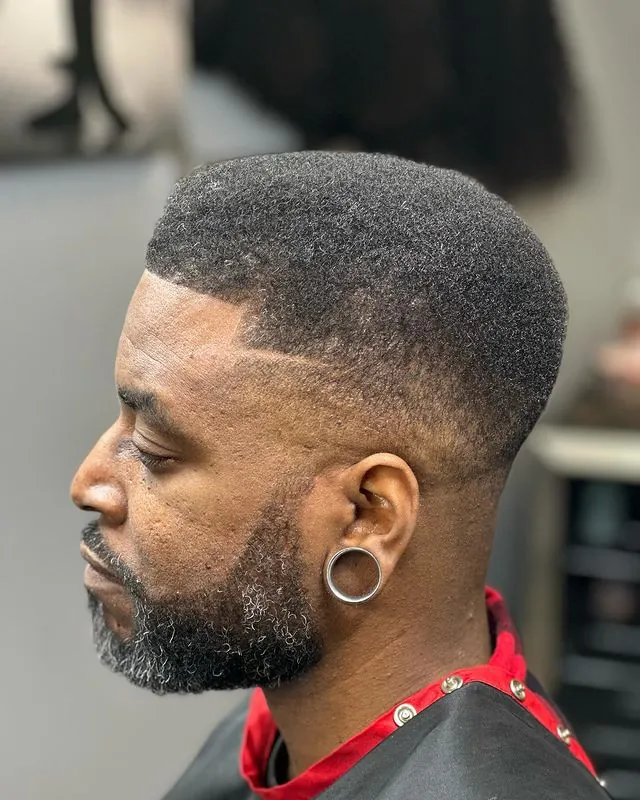
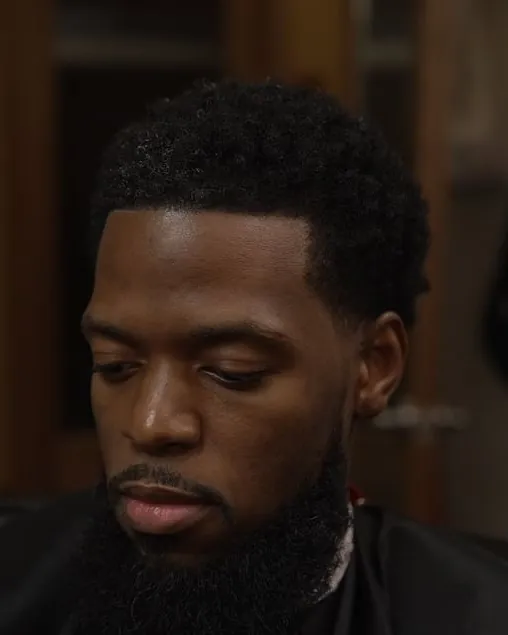
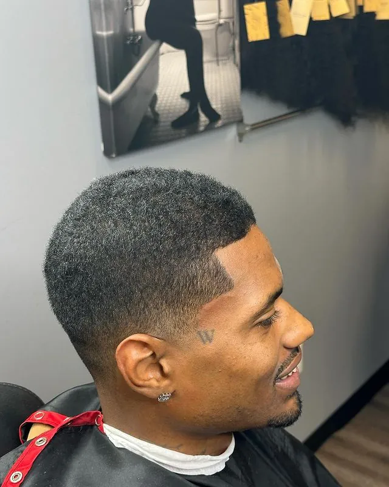

Why Consistent Grooming Is the Secret to Always Looking Sharp
Looking sharp after a haircut is easy. Maintaining that appearance when work gets demanding, family responsibilities increase, and your schedule changes takes a little more intention.
After more than 30 years behind the barber chair, I've learned that the clients who consistently look well-groomed aren't necessarily the ones with the most complicated hairstyles or the most expensive products. They're often the ones who have developed a routine that works for their lives. And that is something anyone can learn to do.
How Long Does a Haircut Last?
A haircut lasts about 2 to 4 weeks for most men before it needs a barber again. Fades and tapers hold for 2 to 3 weeks, short natural cuts for 3 to 4, and longer styles for 4 to 6, while line ups blur within 1 to 2 weeks. The rest of a men's grooming routine, what happens at home between visits, decides whether the cut still looks intentional at the end of that window.
| Style | Looks sharp for | Rebook every | Bridge option |
|---|---|---|---|
| Line up / edge up | 1 to 2 weeks | Every 1 to 2 weeks | n/a |
| Fades and tapers | 2 to 3 weeks | Every 2 to 3 weeks | Line up |
| Short natural cuts | 3 to 4 weeks | Every 3 to 4 weeks | Line up |
| Longer styles, locs, twists | 4 to 6 weeks | Every 4 to 6 weeks | Edge cleanup |
| Beard lineup | 1 to 2 weeks | Every 1 to 2 weeks | n/a |
| Beard trim | 2 to 3 weeks | Every 2 to 3 weeks | Beard lineup |

How Long Does a Fade Last?
A fade looks sharp for about 2 to 3 weeks, and many clients maintain theirs every 1 to 3 weeks depending on the style and how quickly their hair grows. Low fades and temple tapers grow out most gracefully because more length is left on the sides. Mid and high fades show new growth sooner against the shorter blend, so they sit at the short end of that range. If you are still deciding which fade fits you, start there.
[CLIFTON TO CONFIRM: from the chair, about how many days before a skin or low fade starts to shadow, and how many before a mid or high fade loses its line?]
How to Make a Haircut Last Longer
A professional haircut establishes the shape and finish of your style. Your everyday habits help preserve that work.
You don't need an elaborate collection of products or a lengthy morning routine. You do need to understand what your hair, scalp, and beard require.
For some men, that means keeping the hair moisturized and protected at night. For others, it means using the right brush, keeping a beard clean and conditioned, or avoiding excessive product buildup. The important thing is to be intentional.
Ask your barber which two or three habits would make the greatest difference for your particular style. Then practice those habits until they become second nature. A manageable routine that you follow is more valuable than an elaborate routine you abandon after a week.
| When | Hair | Beard | Why |
|---|---|---|---|
| Nightly | Durag, wave cap, or satin pillowcase | Four to six drops of beard oil, massaged into the skin and beard | Less friction while you sleep, so the shape holds longer |
| Daily | A light oil or moisturizer on the scalp, and a brush suited to your texture | Beard oil in the morning, then a pea-sized amount of beard butter, brushed through | Dry hair breaks. Moisturized hair holds its shape. |
| Weekly | Wash on a schedule that fits your texture. [CLIFTON TO CONFIRM: how often, by texture] | A proper beard wash two to three times per week, never bar soap or body wash | Prevents buildup, itchiness, and flaking |
| Every visit | Ask which two or three habits matter most for your cut, then book the next slot before you leave | Same | Your barber maintains the cut instead of correcting it |
What to Do at Home vs. What to Leave to Your Barber
Keeping a haircut fresh is mostly about protecting it. The lines and the blend are the parts you leave alone.
| Area | At home? | Rule |
|---|---|---|
| Neckline below the natural line | [CLIFTON TO CONFIRM] | [CLIFTON TO CONFIRM: is a light cleanup below the natural neckline fine at home, and with what tool?] |
| Cheek line and stray beard hairs | Light cleanup only [CLIFTON TO CONFIRM] | A quality trimmer with guards handles light cheek line cleanup between visits. [CLIFTON TO CONFIRM: the shape of the line itself stays with the barber.] |
| Front hairline and temples | No | Do not attempt your own lineup. A self-inflicted lineup gone wrong means your barber has less hairline to work with at your next visit. Leave the edges to a master barber. |
| Fade blend | No | The entire look depends on a precise gradient from skin to length. Once that is off, the barber is not maintaining the cut. They are correcting it. |
| Moisture, wraps, product | Yes | A nightly wrap, daily moisture, and products that suit your texture. Avoid buildup. |

Start With a Routine You Can Maintain
A grooming routine should fit your lifestyle, not compete with it.
Someone who works long hours may need a different appointment schedule from someone with a flexible workweek. A man who wears a close fade may have different maintenance needs from someone who prefers a longer, natural style. The mistake is copying someone else's routine without considering your own responsibilities.
Start by asking yourself three questions:
- How do I want to maintain my appearance throughout the month?
- What amount of time can I realistically set aside for grooming?
- What can I consistently do between professional appointments?
The answers help you establish a standard that is both practical and sustainable. Consistency doesn't mean doing everything perfectly. It means choosing a routine you can follow.
Book Your Next Visit Before You Leave the Chair
One of the simplest ways to become more consistent is to stop treating your next haircut as a last-minute decision.
When grooming is left until you notice your appearance needs attention, you're depending on two things: remembering to schedule and finding an appointment that works. Both become more difficult when life is busy.
Instead, consider planning your next visit before you leave the barber chair. If you already know the general rhythm that works for you, look ahead at your work schedule, family commitments, and upcoming events. A little planning removes unnecessary decisions later.
This isn't about making grooming the center of your life. It's about giving it a reasonable place within your responsibilities.
When a Week Goes Sideways
No one maintains a perfect schedule every month. Travel happens. Work runs late. Family needs come first. Sometimes an appointment has to be moved.
The difference between having a routine and simply reacting to your appearance is what you do next.
If you miss an appointment, reschedule rather than waiting until your next special occasion. If your normal grooming products aren't available while traveling, keep a few essentials on hand. If your schedule changes permanently, talk with your barber about adjusting your maintenance plan.
A routine should be flexible enough to survive real life. Consistency isn't never missing a step. It's knowing how to return to your standard when something interrupts it.
Use a Line Up as a Bridge Appointment
If a full haircut has to slide a week, a line up by appointment keeps the edges clean in the meantime. It is the fastest way to look put together between full cuts, and it extends the life of the haircut by a week or more. See how long a line up lasts, and book it as a Shape Up (Line Up).

Book as You Go, Pre-Book, or Membership: Which System Fits
Some people maintain their routine by booking their appointments individually. Others prefer scheduling several visits in advance. For clients who already know they'll need regular professional grooming, a membership may provide a useful structure.
The best choice depends on your habits, schedule, and how frequently you actually use the service. What matters is understanding the commitment you're making.
A membership isn't a substitute for showing up, and a calendar reminder won't maintain your haircut for you. These are simply tools that help you follow through on a decision you've already made. Choose the approach that fits your life and that you can use consistently.
| System | Best for | Cadence | Note |
|---|---|---|---|
| Book as you go | Longer styles and flexible schedules | Every 4 to 6 weeks | The simplest system, and the easiest to let lapse |
| Pre-book before you leave | Fades, tapers, and short cuts | Every 2 to 3 weeks | Takes about a minute on Booksy |
| Membership (Bronze, Silver, or Gold) | Men already coming in every 1 to 2 weeks | 2, 3, or 4 haircuts a month, from $110 | 6-month minimum. Is a membership worth it? |
| Father & Son Membership | Fathers and sons on a shared rhythm | 2 haircuts a month each, $180 | Why father-son haircuts matter |
Let Your Routine Reflect Your Own Standard
There will always be an occasion that encourages you to look your best: an interview, a celebration, an important meeting, or a family gathering. But your everyday appearance shouldn't depend entirely on having an event to prepare for.
The greater benefit of a dependable grooming routine is that you're no longer starting from scratch whenever something important comes along.
You've already made room for your personal care. You've already developed habits that work. And you've established a standard that belongs to you, not to an occasion or someone else's expectations.
Looking sharp isn't about having a fresh haircut every day. It's about understanding your grooming needs, taking reasonable care of yourself, and maintaining the routine you've chosen. A good haircut gives you a strong starting point. What you do afterward makes consistency possible.
Frequently Asked Questions
How long does a haircut last?
Most men's haircuts last 2 to 4 weeks before they need a barber again. Fades and tapers hold for 2 to 3 weeks, short natural cuts for 3 to 4, and longer styles, locs, and twists for 4 to 6. Line ups blur first, usually within 1 to 2 weeks.
How long does a fade last?
A fade looks sharp for about 2 to 3 weeks, and many clients maintain theirs every 1 to 3 weeks. Low fades and temple tapers grow out most gracefully because more length is left on the sides. Mid and high fades show new growth sooner, so they need the earlier end of that range.
How do I make my haircut last longer?
Protect it at night with a durag, wave cap, or satin pillowcase, keep your hair and scalp moisturized, and avoid product buildup. Leave the hairline and the fade blend to your barber. Then book the next visit before you leave the chair, so maintenance never turns into correction.
Can I clean up my neckline or line myself up at home?
Leave the front hairline and temples to your barber. A self-inflicted line up gone wrong means less hairline to work with at your next visit. [CLIFTON TO CONFIRM: whether light neckline cleanup below the natural line is fine at home, and the rule for it.]
Should I book my next haircut before I leave?
Yes. Booking before you leave the chair removes the two things that fail when life gets busy: remembering to schedule and finding a time that works. It takes about a minute on Booksy, and it is the simplest way to stay on your rhythm.
What if I miss a haircut appointment?
Reschedule rather than waiting for your next special occasion. If travel or work interrupts your routine, keep a few essentials on hand, and if your schedule changes permanently, talk with your barber about adjusting your maintenance plan. Consistency is knowing how to return to your standard, not never missing a step.
Do I need a membership to stay consistent?
No. Some clients book each visit individually, some pre-book before they leave, and some use a membership for structure. A membership isn't a substitute for showing up; it's a tool that helps you follow through on a decision you've already made.
Book Your Next Visit in Owings Mills
A dependable grooming routine begins with a plan that works for your lifestyle. Explore the membership options at Al-Hakeem's Tonsorial and see whether a structured appointment schedule is right for you.
Al-Hakeem's Tonsorial is a Black-owned barbershop that works by appointment from a private barber suite in Owings Mills. Book your next visit before the current cut grows out, and ask what a good haircut should cost if you are comparing shops.
Parking is free in Metro Centre's garages, and the Owings Mills Metro station connects by pedestrian tunnel. See how to find the suite.
Explore Membership Options